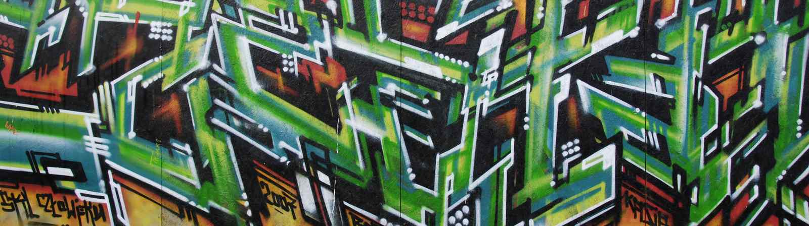
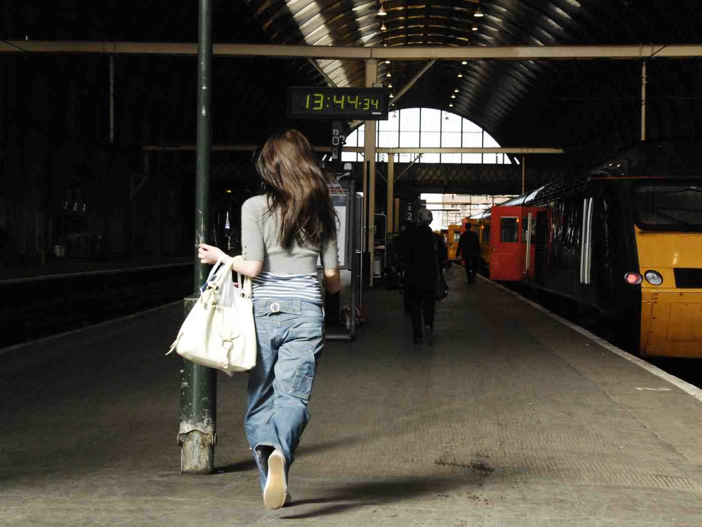
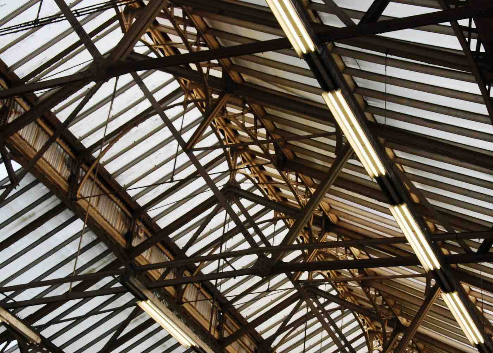
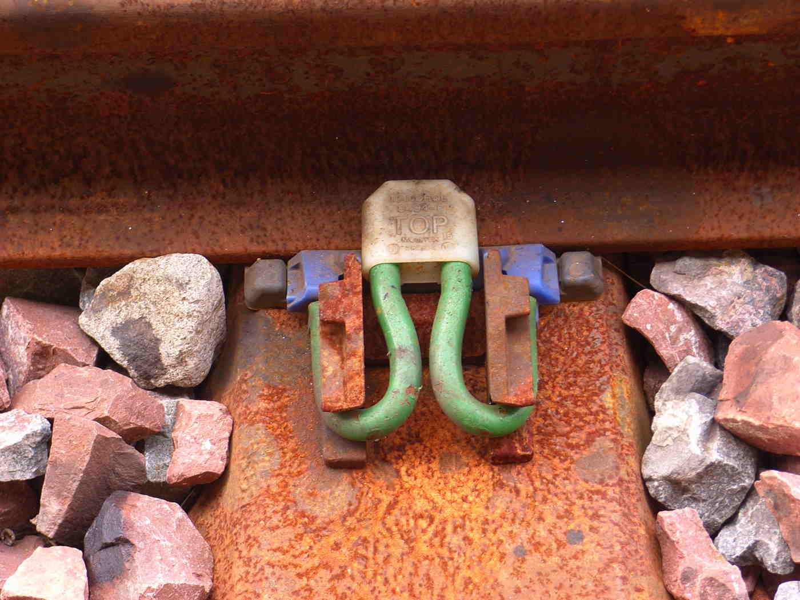
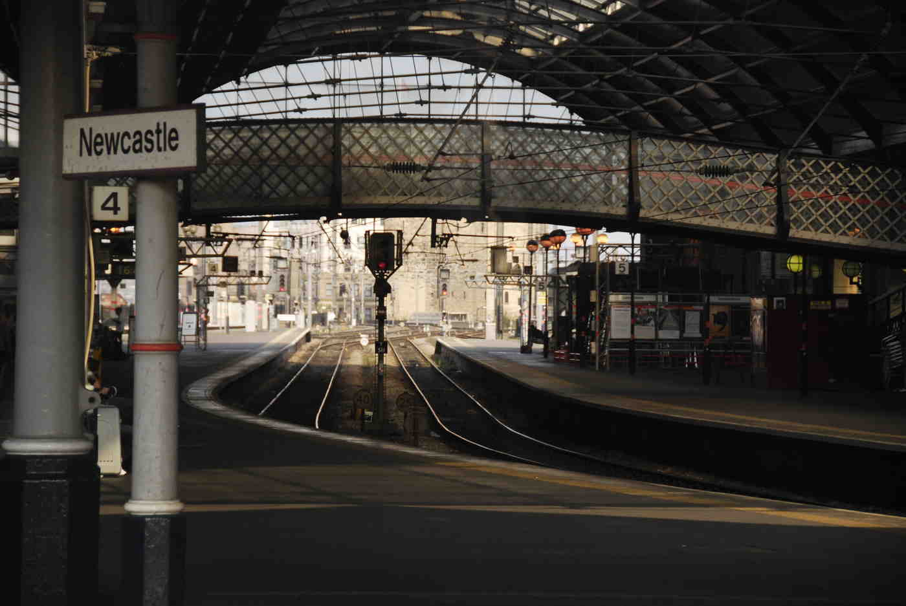
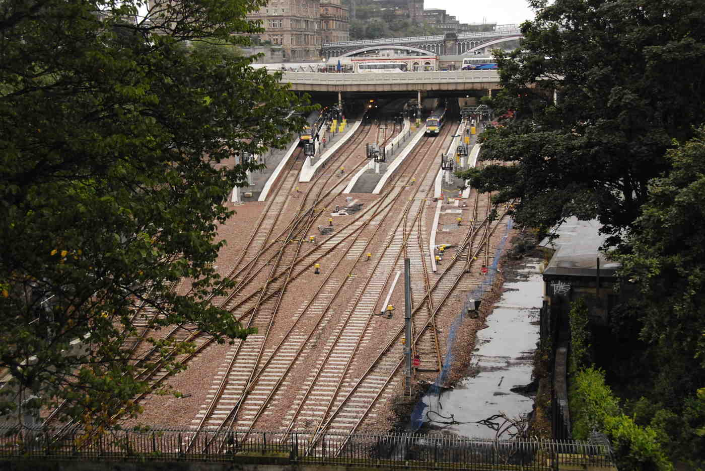
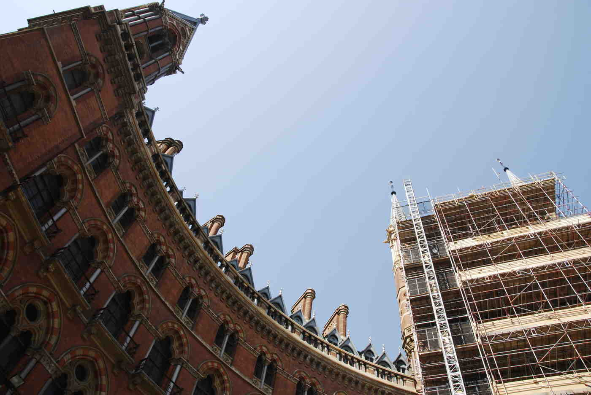

So I was in King’s Cross Station with two large suitcases waiting for my train, amusing myself by snapping shots of the architecture (I’m a photographer). Two security guards came up and ordered me to stop.
Why? "Because of terrorists."
I pointed out that King’s Cross station is one of the most public places in Britain, and every phone nowadays has a camera. I did not mention that if they really thought I was a terrorist they should be more nervous about my suitcases. Anyway, they made me stop.
I called the newspapers and at least two of them ran the story. Here is one of the articles: read all about it!
Terrorism is about instilling fear and exerting control, and not letting people go about their lives in peace. In their own way Network Rail seem to wish to participate; certainly I no longer feel safe taking photographs, waiting as I am for the next pair of gorillas to jump on me.
Terrorism has not succeeded. I do not walk around being afraid of getting blown up. I do worry about train crashes, but even that doesn’t stop me taking the train. If I can handle all that, why I should let myself be bullied out of taking photos in train stations?
In fact I want to share my photos of our nation’s train stations with everybody — scroll down to see them. You can use these photographs any way you like. If you find them useful in the massacre of innocents, please send me an e-mail stating your name, address, and the nature of your plot.
I’m not the only one:
- Has our increasingly paranoid society declared war on the humble 'weekend snapper'? (Daily Telegraph)
- Photographers Face Paranoia in UK (PhotographyBay)
- Film of an incident similar to what happened to me, though I didn’t argue as much. (YouTube)
- MP Austin Mitchell condemns police action against lawful photography in public places. (Amateur Photographer)











